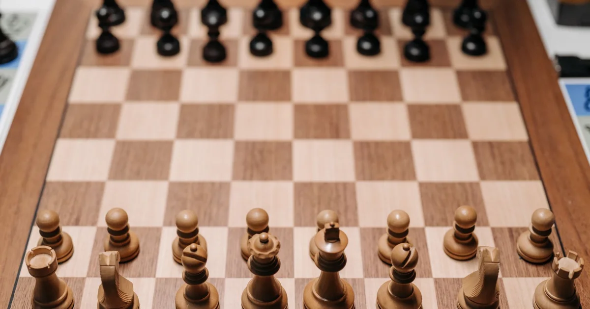

Au sommaire
- Avant les ouvertures : les 3 principes d'or
- 1. L'ouverture italienne (Blancs) — la référence absolue
- 2. Le système de Londres (Blancs) — le plan clé en main
- 3. La défense Caro-Kann (Noirs contre 1.e4)
- 4. La défense slave (Noirs contre 1.d4)
- 5. Le bon vieux 1...e5 — répondre œil pour œil
- Les 3 erreurs qui ruinent vos ouvertures
- Comment travailler vos ouvertures (sans y passer vos soirées)
Avant les ouvertures : les 3 principes d'or
Petite confession de professeur : quand un débutant me demande d'apprendre des ouvertures, je commence toujours par freiner. Pourquoi ? Parce que 90 % des parties de débutants ne se décident pas dans l'ouverture, mais sur une pièce laissée en prise au 15e coup. Mémoriser 12 coups de théorie n'y changera rien.
Ce qui compte vraiment, ce sont les trois principes universels — valables dans toutes les ouvertures de cet article :
- Contrôlez le centre : les cases e4, d4, e5, d5 sont le cœur du jeu. Une pièce au centre voit plus loin qu'une pièce dans un coin.
- Développez vos pièces : cavaliers et fous doivent sortir vite (cavaliers avant les fous, en général). Une pièce qui dort sur sa case de départ ne participe pas à la partie.
- Mettez votre roi à l'abri : roquez tôt, idéalement avant le 10e coup. Un roi au centre est un aimant à attaques.
1. L'ouverture italienne (Blancs) — la référence absolue
Les coups : 1.e4 e5 2.Cf3 Cc6 3.Fc4
Si les ouvertures étaient des plats, l'Italienne serait le plat du chef que l'on apprend en premier à l'école de cuisine. Vieille de plus de 400 ans, jouée aussi bien par les débutants que par Magnus Carlsen, elle applique les trois principes d'or au pied de la lettre :
- 1.e4 : on occupe le centre et on libère le fou et la dame
- 2.Cf3 : on développe un cavalier en attaquant le pion e5 — développement + menace, le combo parfait
- 3.Fc4 : le fou vise f7, la case la plus fragile du camp noir (elle n'est défendue que par le roi)
- Ensuite : petit roque, d3, et vous avez une position saine que vous comprenez
Pourquoi c'est la meilleure école : l'Italienne mène à des positions ouvertes et naturelles, où les pièces respirent et où les plans sont logiques. Vous apprendrez plus des échecs en 50 parties d'Italienne qu'en 200 parties d'ouvertures « exotiques ».
2. Le système de Londres (Blancs) — le plan clé en main
Les coups : 1.d4 d5 2.Ff4 puis e3, Fd3, Cf3, Cbd2, c3
Le Londres, c'est le couteau suisse des ouvertures : quasiment le même schéma quoi que jouent les Noirs. On sort le fou en f4 avant de fermer la diagonale avec e3, on construit une petite pyramide de pions (c3-d4-e3), et toutes les pièces ont une case attitrée.
Ses atouts pour un débutant :
- Un plan reproductible : moins de par-cœur, plus de compréhension
- Une structure très solide : difficile de se faire punir dans les 10 premiers coups
- Utilisé jusqu'au sommet : Carlsen l'a employé en championnat du monde, c'est dire le sérieux du système
Son défaut, soyons honnêtes : joué mécaniquement, le Londres peut devenir un pilote automatique qui endort votre progression. Si vous remarquez que vous jouez vos 8 premiers coups sans réfléchir une seconde, c'est le signal pour varier. Un de mes élèves l'appelait « l'ouverture pantoufle » — confortable, mais on ne court pas un marathon en pantoufles. 😄
3. La défense Caro-Kann (Noirs contre 1.e4)
Les coups : 1.e4 c6 2.d4 d5
Avec les Noirs, tout le monde vous jouera 1.e4 — il vous faut une réponse fiable. La Caro-Kann est ma recommandation préférée pour les débutants sérieux, et voici pourquoi.
L'idée est limpide : le coup 1...c6 prépare 2...d5, pour contester le centre immédiatement tout en gardant une structure de pions saine. Contrairement à d'autres défenses, votre fou de cases blanches (le fameux « mauvais fou » de la Française) sortira librement.
- Solidité remarquable : la Caro-Kann est réputée être l'une des défenses les plus difficiles à attaquer
- Plans simples : développer, roquer, jouer contre le centre — pas de séquences forcées de 15 coups à mémoriser
- Une carrière entière : des champions du monde comme Capablanca, Karpov et Carlsen l'ont adoptée — vous ne la « dépasserez » jamais
4. La défense slave (Noirs contre 1.d4)
Les coups : 1.d4 d5 2.c4 c6
Contre 1.d4, je conseille la Slave — la cousine de la Caro-Kann, avec la même philosophie : un centre solide, des pièces qui se développent naturellement, pas de mauvaise surprise.
Le coup 2...c6 soutient le pion d5 et refuse poliment le « gambit » c4 (prendre le pion est possible, mais le garder est une autre histoire — laissez ça aux joueurs confirmés). Ensuite : Cf6, Ff5 (le fou sort AVANT e6, retenez ce détail), e6, et le roque.
Le bonus pédagogique : jouer Caro-Kann contre 1.e4 et Slave contre 1.d4, c'est apprendre une seule idée (le duo de pions c6-d5) qui couvre les deux ouvertures adverses les plus fréquentes. Votre cerveau de débutant vous dira merci — il a déjà beaucoup à faire avec les règles, la tactique et les finales.
5. Le bon vieux 1...e5 — répondre œil pour œil
Les coups : 1.e4 e5 (puis développement naturel : Cc6, Cf6, Fc5 ou Fe7, roque)
Je terminerai par un aveu : pour un débutant absolu, la « meilleure défense » reste peut-être la plus simple de toutes — répondre 1...e5 à 1.e4, et jouer aux échecs. Symétrie, centre, développement. C'est ainsi qu'ont appris toutes les générations avant les vidéos YouTube.
Oui, vous croiserez des pièges (le mat du berger, l'attaque sur f7...). Mais chaque piège subi une fois est une leçon gravée pour toujours. Et vous apprendrez à jouer les parties ouvertes, celles qui forgent le sens tactique — exactement ce dont votre progression a besoin entre 0 et 1000 Elo, comme on l'explique dans le plan complet de 0 à 500 Elo.
Envie de construire VOTRE répertoire d'ouvertures ?
En cours, on choisit ensemble 2-3 ouvertures adaptées à votre style, et surtout on apprend les idées derrière les coups. Premier cours offert, à domicile (Paris/Versailles) ou en visio.
Réserver mon cours offertLes 3 erreurs qui ruinent vos ouvertures
Erreur n°1 : apprendre par cœur sans comprendre
Le grand classique. Vous mémorisez 10 coups, l'adversaire dévie au 4e... et vous voilà seul au monde, dans une position que vous ne comprenez pas, avec 10 coups de théorie inutiles en tête. Apprenez les idées, pas les séquences.
Erreur n°2 : changer d'ouverture après chaque défaite
Vous perdez avec l'Italienne, alors vous essayez l'Écossaise. Vous perdez avec l'Écossaise, alors le gambit du roi... Stop. Ce n'est presque jamais l'ouverture qui perd la partie — c'est la pièce en prise du 18e coup. Gardez le même répertoire au moins 6 mois, sinon vous repartez de zéro à chaque fois (c'est d'ailleurs l'une des causes classiques de stagnation aux échecs).
Erreur n°3 : y consacrer trop de temps
À votre niveau, la répartition idéale de l'entraînement ressemble à : 50 % de tactique, 30 % de parties jouées et analysées, 10 % de finales... et 10 % d'ouvertures maximum. Le débutant qui inverse cette pyramide construit sa maison en commençant par le toit.
Comment travailler vos ouvertures (sans y passer vos soirées)
Ma méthode en trois étapes, celle que j'utilise avec mes élèves :
- Étape 1 — Choisissez votre trio : une ouverture avec les Blancs (Italienne ou Londres), une défense contre 1.e4 (Caro-Kann ou 1...e5), une contre 1.d4 (Slave). C'est tout. Trois ouvertures, pas douze.
- Étape 2 — Jouez-les systématiquement : chaque partie en ligne, chaque partie amicale, les mêmes ouvertures. La répétition crée l'intuition.
- Étape 3 — Analysez vos 10 premiers coups après chaque défaite : où avez-vous quitté vos principes ? Un pion du centre abandonné ? Un roque oublié ? C'est là que se cache la vraie leçon.
Et rappelez-vous : Gukesh et Sindarov, qui s'affronteront pour le titre mondial fin 2026, jouaient l'Italienne à leurs débuts. Comme tout le monde. Les fondations d'abord, les gratte-ciels ensuite.
On construit votre répertoire ensemble ?
À Paris et Versailles (ou en visio), je vous aide à choisir vos ouvertures et surtout à comprendre les idées derrière chaque coup. Le premier cours est offert.
Discutons de votre projetPour aller plus loin
Les principes d'ouverture, la tactique, les finales et une partie commentée coup par coup :
« Apprendre les Échecs » — le guide gratuit de 90 pages Envoyé immédiatement par email, avec exercices corrigés →Article recommandé
Maintenant que vous savez quoi jouer dans l'ouverture, éliminez les fautes qui gâchent le reste de la partie :
Les 10 Erreurs du Débutant aux Échecs (et Comment les Corriger) La checklist complète pour arrêter de perdre bêtement →
Article rédigé par Nicolas Musicki, professeur d'échecs à Paris et Versailles
Retour à l'accueil |
Me contacter